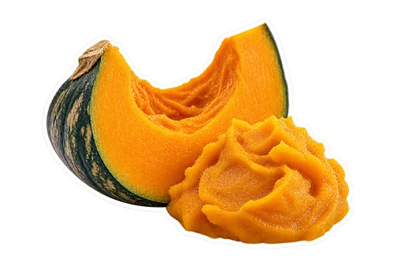
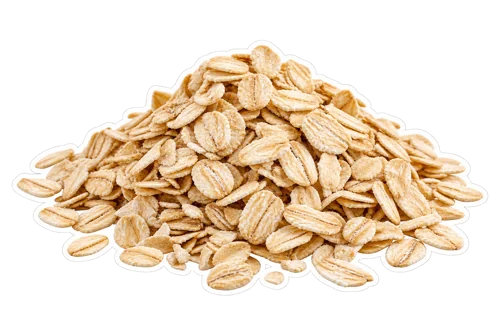

What you will need
Yield: 2 small glasses (about 2 cups). Final volume changes with fruit, straining, and liquid adjustments.

½ cup plain cooked pumpkin purée (about 120 g)
¼ cup plain rolled oats (about 20 g)- ¾ cup cold milk or unsweetened plant milk (180 ml)
- ½ cup plain yogurt (about 120 g)
- ¼ teaspoon ground cinnamon
- Optional: 1–2 teaspoons maple syrup, to taste
How to make it
Check that the pumpkin is plain cooked purée, not pumpkin pie mix. Put the oats and milk in a small bowl and let them sit for 10 minutes while you gather the other ingredients.
Pour the oat-and-milk mixture into the blender. Add pumpkin purée, yogurt, and ¼ teaspoon cinnamon. Do not use raw pumpkin chunks as a direct substitute for the cooked purée.
Blend until as smooth as your machine comfortably makes it. Stop before scraping or redistributing contents. Add another tablespoon of milk if the mixture needs more movement.
Taste before adding syrup. If desired, blend in 1 teaspoon maple syrup, then taste again before adding the second. Keep cinnamon to a small adjustment rather than tipping in a large extra spoonful.
Divide between two small glasses and serve. The oats can make the mixture thicker as it stands, so stir and adjust with a splash of milk if needed.
What's in this drink
- Cooked pumpkin: The listed amounts for reference cooked pumpkin are 288 mcg vitamin A (RAE) and 0.091 mg copper for 100 g. USDA: Pumpkin, cooked, boiled, drained, without salt.
- Rolled oats: The listed amounts for reference rolled oats are 4.92 mg manganese and 0.626 mg copper for 100 g. USDA: Oats (Includes foods for USDA's Food Distribution Program).
- Plain dairy yogurt: The listed amounts for reference plain dairy yogurt are 0.37 mcg vitamin B12 and 0.142 mg riboflavin (B2) for 100 g. USDA: Yogurt, plain, whole milk.
Nutrient figures are per 100 g of the USDA reference ingredient, not per serving.
The yogurt entry for pumpkin oat smoothie without banana describes whole-milk dairy yogurt, not a plant-based alternative.
Storage
Cover and refrigerate leftovers promptly. Follow the storage directions on opened packaged ingredients. FoodSafety.gov recommends refrigerating perishable food within two hours, or one hour above 90°F, and keeping the refrigerator at 40°F or below.
Short FAQ
Can I use steel-cut oats?
They are not the direct swap for rolled oats in this short preparation. Use the written rolled-oat ingredient, or develop a separate cooked-oat variation with different amounts and timing.
Can I use pumpkin pie mix?
The written recipe uses plain pumpkin purée. Pie mix changes the starting ingredients and sweetness, so choose plain purée if you want to follow these measurements.
Is this a hot smoothie?
No. It is an autumn-flavored cold smoothie. Use cooled cooked purée and chilled milk or other liquid, following the blender’s temperature guidance.